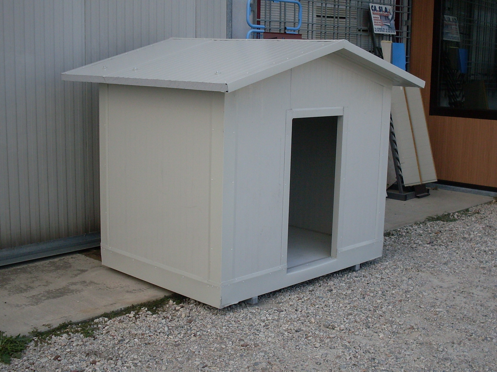
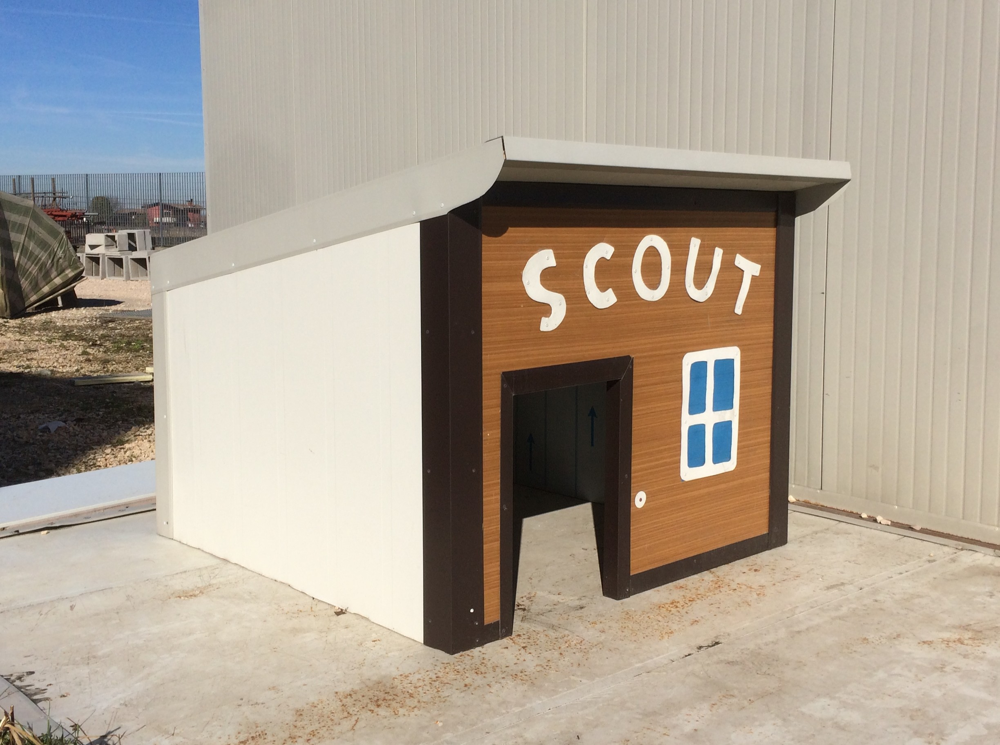
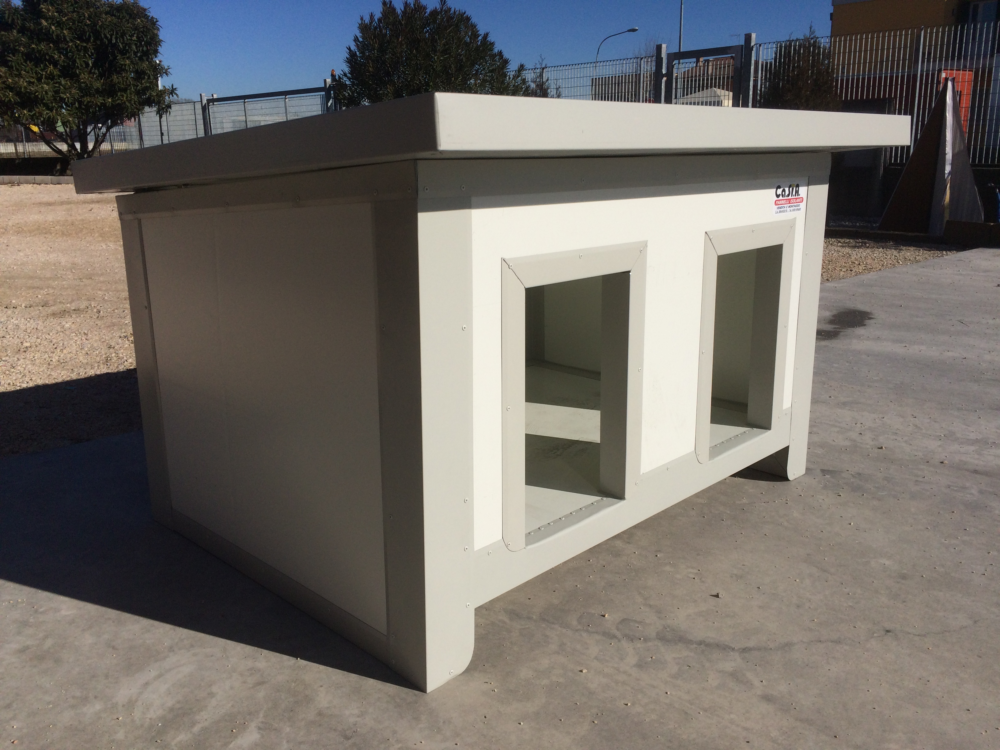
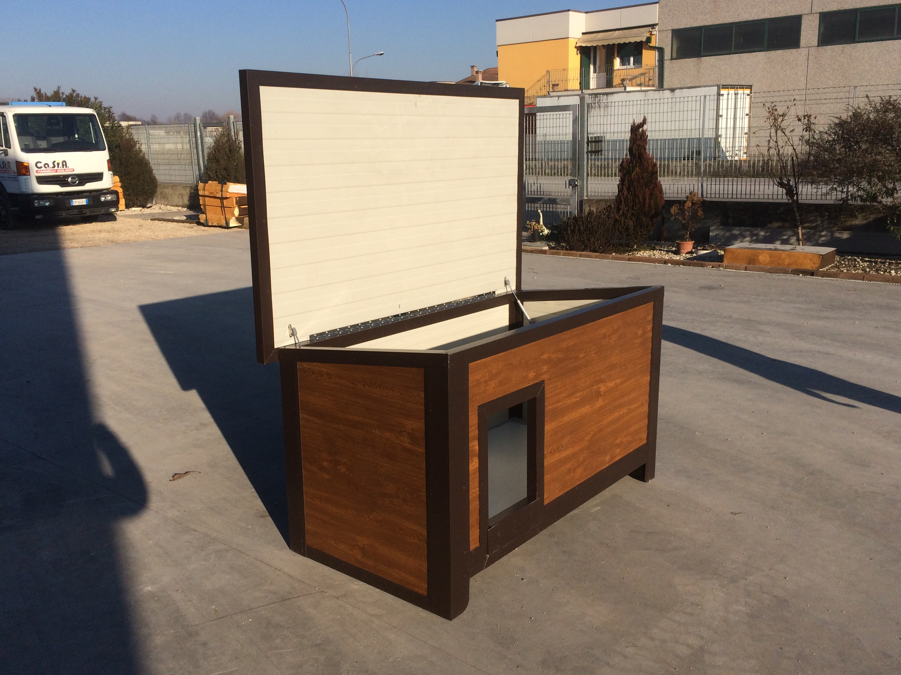

Cucce coibentate
La linea ISO-Pet nasce per offrire ai nostri amici a quattro zampe il massimo del comfort e della protezione, superando definitivamente i limiti di deterioramento e scarsa igiene del legno o della plastica tradizionale. Grazie alla tecnologia dei pannelli sandwich isolanti, queste cucce garantiscono un ambiente interno perfettamente termoregolato: fresco d'estate e caldo d'inverno, riparando l'animale dalle intemperie e dall'umidità del terreno.
- Uso Privato e Domestico:Soluzioni eleganti e durature per il giardino di casa, adatte a cani di ogni taglia, gatti o piccoli animali da cortile.
- Uso Professionale (Allevamenti e Pensioni):Strutture modulari ideali per canili, gattili, cliniche veterinarie e centri di addestramento. Possono essere configurate con divisori interni, zone giorno/notte separate e supporti rialzati.
La robustezza è garantita da profili perimetrali in alluminio antitorsione e antimorso, mentre l'estetica si adatta ad ogni spazio: dalle finiture classiche fino ai rivestimenti effetto legno, per unire la massima funzionalità a un design piacevole e pulito.
Usa questa pagina per raccontare le caratteristiche principali, le dimensioni disponibili e i materiali disponibili per ogni modello.
Dettagli e Specifiche Tecniche del prodotto
- Profili Perimetrali: Alluminio anodizzato o acciaio zincato, progettati con sistemi antimorso per la sicurezza dell'animale
- Pannelli Parete: Pannelli sandwich isolanti di grado industriale (superficie liscia e perfettamente lavabile)
- Isolamento Termico: Poliuretano espanso rigido ad alta densità (esente da CFC) per una coibentazione ottimale
- Spessore Pareti: Opzioni da 30 mm o 40 mm (garanzia di protezione termica totale in ogni stagione)
- Copertura: Tetto isolante piano o a capanna, apribile su cerniere per facilitare l'ispezione e la pulizia interna
- Accessori e Accessi: Porte con tendine termiche in PVC trasparente antifreddo, pedane interne rialzate e bocchette di ventilazione regolabili
- Configurazioni Speciali: Possibilità di inserire riscaldamento a pavimento con termostato di sicurezza o divisori interni anti-corrente
- Basamento e Piedini: Base sollevata da terra con piedini regolabili per isolare la struttura dall'umidità del suolo e dai ristagni d'acqua
- Resistenza e Sicurezza: Materiali totalmente atossici, privi di schegge o spigoli vivi taglienti
- Colori e Finiture: Bianco Grigio, Verde Muschio, Effetto Legno (noce o faggio), Grigio Antracite
Questa sezione può contenere informazioni aggiuntive su installazione, accessori e opzioni di personalizzazione.
I Vantaggi Chiave per il Cliente
Benessere animale, igiene impeccabile e una struttura che dura per sempre.
- Igiene e Sanificazione Rapida: I pannelli non assorbono odori o liquidi. La cuccia può essere lavata internamente in pochi minuti con acqua e disinfettanti, contrastando efficacemente parassiti, acari e batteri.
- Zero Manutenzione e Antimorso: A differenza del legno, i pannelli sandwich non marciscono, non richiedono verniciature periodiche e i profili rinforzati impediscono al cane di rosicchiare la struttura.
- Clima Ideale Tutto l'Anno: L'alto potere isolante protegge l'animale dal gelo invernale e dall'afa estiva, riducendo drasticamente lo stress termico e i rischi per la sua salute.
Galleria

Cuccia decorata

Cuccia doppia

Cuccia con tettuccio apribile